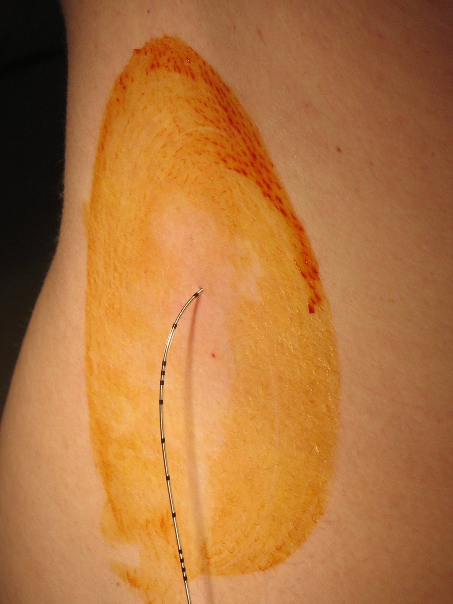

Página 8 · O peri-parto da anticoagulada
O parto da paciente anticoagulada
Paciente em anticoagulação plena, 38 semanas, chega em trabalho de parto ativo. Ela pode fazer peridural? Quando o obstetra deveria ter programado esse parto?
- Anticoagulação
- dose plena (HBPM terapêutica)
- Idade gestacional
- 38 semanas, em trabalho de parto espontâneo
- Tensões em jogo
- sangramento no parto × segurança anestésica (neuroeixo)
Guarde essa paciente. A página é gestão de janela temporal — o intervalo entre suspender e reintroduzir a heparina — e o caso expõe de imediato as duas tensões que o texto resolve.
Via vaginal preferível, parto programado ~39 semanas
A via vaginal é preferível nesta paciente. A cesariana aumenta o risco trombótico — e essa paciente já reúne praticamente todos os fatores de risco; somar uma cirurgia é jogar contra. Mesmo preferindo a via vaginal, muitas vezes se prefere programar o parto, em torno de 39 semanas. A programação equilibra dois perigos: programar cedo demais causaria prematuridade iatrogênica; esperar demais deixaria a paciente entrar em trabalho de parto espontâneo ainda dentro da janela de anticoagulação, sem o intervalo (delta-T) necessário para interromper a heparina. As ~39 semanas ficam no ponto ótimo: maduro o suficiente e controlável.
Suspender a heparina antes do parto: 12h profilática / 24h plena
O intervalo de segurança antes do parto — o delta-T de suspensão da heparina — tem valores exatos que dependem da dose: 12 horas se a paciente está em dose profilática, 24 horas se está em dose plena. Esse intervalo importa por dois motivos: o risco de sangramento no parto e as considerações anestésicas. Programar o parto é justamente o que garante respeitar esse delta-T — você suspende a heparina no tempo certo antes de um parto marcado.
Sem o intervalo, sem neuroeixo — anestesia geral
Aqui está a regra de ouro anestésica. Sem o intervalo adequado de suspensão, a paciente não pode fazer punção de neuroeixo — não pode peridural, não pode raqui (raquianestesia). O motivo é o risco de hematoma de neuroeixo, uma complicação catastrófica: puncionar o espaço peridural/subaracnóideo numa paciente anticoagulada pode gerar um hematoma que comprime a medula. Se não deu tempo de suspender a heparina no intervalo seguro e o parto precisa de anestesia, parte-se para anestesia geral. É por isso que perder a janela de suspensão não é só um detalhe de agenda — é perder a peridural.

O dispositivo atravessa a pele preparada para acessar o espaço peridural. Numa paciente anticoagulada sem a janela segura de suspensão, esse gesto deixa de ser analgesia e vira risco crítico de hematoma espinhal — por isso o delta-T muda a conduta anestésica.
User:Ravedave, Wikimedia Commons — Epidural. Licença CC BY 2.5 · fonte
Reintroduzir a heparina no pós-parto: 8 a 12 horas
Acabou o parto ≠ acabou o problema: é preciso reintroduzir a heparina no pós-parto, porque o puerpério é o pico de risco. O tempo de reintrodução: no pós-parto vaginal sem complicação, libera-se a partir de 8 horas; na cesariana, retorna-se um pouco mais tarde, em torno de 12 horas. A regra prática que funciona na maioria das situações: grave em torno de 12 horas para a reintrodução. Suspender no tempo certo antes, reintroduzir no tempo certo depois — a heparina emoldura o parto.
Suspensão antes do parto: 12h (profilática) / 24h (plena). Reintrodução após o parto: vaginal ≥8h / cesárea ~12h ("grava 12h"). Sem o intervalo de suspensão → neuroeixo proscrito (peridural/raqui) → anestesia geral se necessário.
- TEV6 semanas · pico precoce
- Peri-partoreintrodução 8–12h
- Baby blues≤ 2 semanas
- Depressão≥ 2 semanas
- Psicose1ª semana / 1º mês
Quiz — fixação
Paciente em HBPM em dose plena, parto programado. Qual o intervalo mínimo de suspensão da heparina antes da punção de neuroeixo?
- B — dose plena, 24h. A dose plena exige 24h de suspensão antes do neuroeixo; a profilática, 12h.
- A. É o intervalo da dose profilática — aplicá-lo à plena encurta a margem e arrisca hematoma.
- C. Confunde com o tempo de reintrodução pós-parto vaginal (≥8h), a outra ponta da janela.
- D. Ignora a regra de ouro anestésica: sem intervalo, não há peridural nem raqui.
Sobre a reintrodução da heparina no pós-parto:
- C — respeita a hemostasia. ~8h no vaginal, ~12h na cesárea.
- A. Erro clássico "acabou o parto, acabou o risco" — o puerpério é o pico e exige reanticoagular.
- B. Reintroduz cedo demais, sobre um útero recém-dequitado, e sangra.
- D. Confunde reintrodução (horas) com duração total (semanas/meses) — deixaria a paciente descoberta no auge do risco.
Percorrido o eixo do TEV inteiro, é hora de voltar ao começo: resolver a questão UEL plantada na abertura e dissecar por que cada alternativa erra.